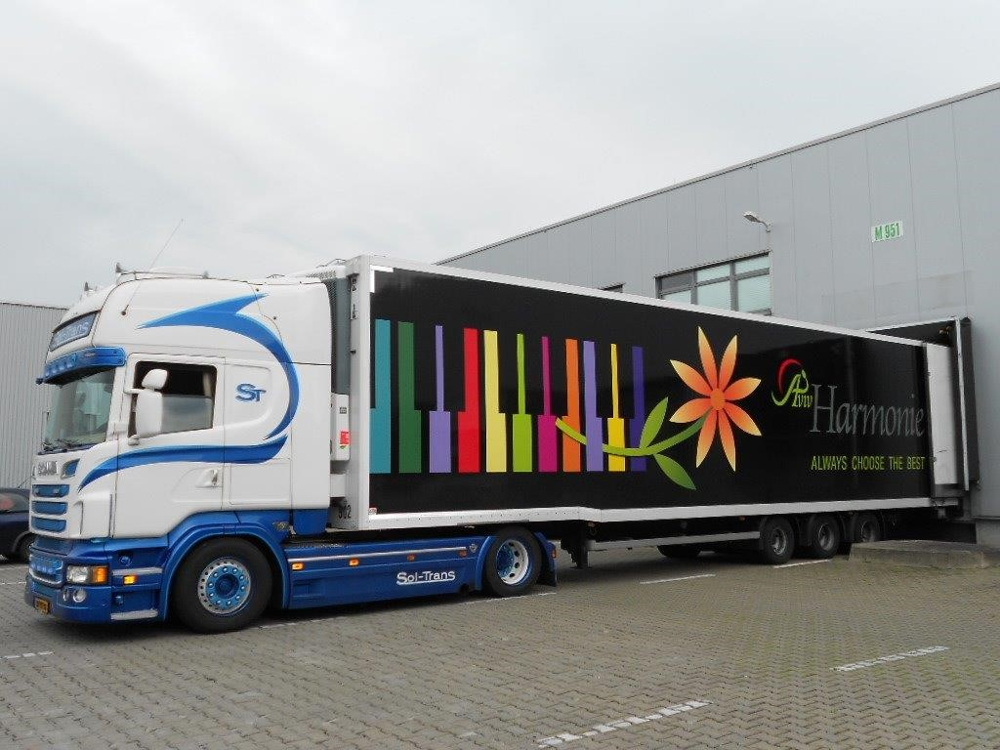

Aviv 始于田间——如今依然每天从田间开始。从一座以色列农场成长为国际化供应企业，但品质的衡量标准从未改变：采购商手中的那一支花。

Aviv 成立，作为鲜切花种植出口商，从第一天起就通过荷兰拍卖体系销售。
特色作物与稀有品种汇聚于同一个品质标志——HARMONIE，在拍卖钟上获得广泛认可。
在荷兰与德国（Aviv GmbH）设立子公司，让自己的团队贴近所服务的客户。
为鲜花打造的冷链开始运送新鲜香草、食用花卉与迷你柑橘，服务欧洲餐饮市场。
Aviv 网上商城将注册批发采购商与种植户直接连接——实时库存、一口价、当日晨拍照片。
Aviv 与遍布以色列各产区的合作农场共同协作——从沙龙平原到阿拉瓦沙漠。每家农场都按 HARMONIE 分级规范签约，每一箱都可追溯到其种植户与地块。
成为合作种植户每季开始前共同规划品种与供量。
一份规格表，农场与包装车间同步执行。
种植户看到与我们相同的市场数据。
在线查询发货、成交结果与结算。
我们的愿景说来简单，做到很难：成为批发采购商最信赖的特色品种供应商——并让采购像亲自走进田间一样直接、透明。
为此我们持续投入三件事：特色育种合作，让 HARMONIE 目录始终领先市场；冷链与物流技术，不断缩短从田间到花瓶的时间；以及数字化贸易——网上商城与种植户门户，去掉中间环节而不失责任。
Aviv GmbH 立足荷兰阿斯米尔枢纽，每日为德国及中欧的批发商、园艺中心与零售连锁供货——本地团队、本地结算、完整的 HARMONIE 产品线。
